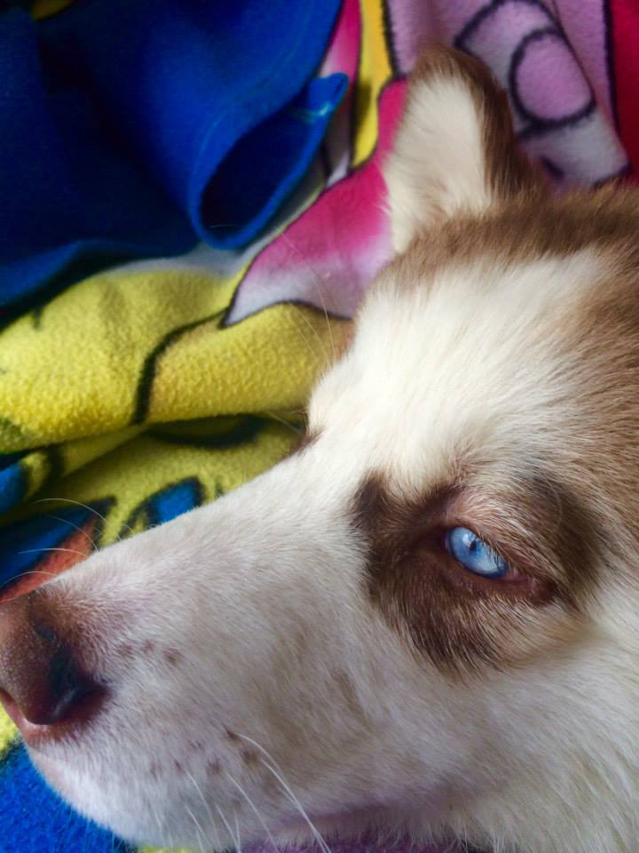

Rasgos de la raza
País: Estados Unidos
Grupo: Grupo 5 de la FCI, Grupo de trabajo según el AKC
Categoría de tamaño: Mediano
Esperanza de vida promedio: 11–13 años
Amistoso / Dócil / Alerta / Seguro / Inteligente / Entusiasta / Apacible / Trabajador / Independiente
Learn More
¿Estás pensando en tener un perro?
Consejos e información para ayudarte a tomar la decisión correcta para vos y tu futuro perro.
¿Un perro es la mascota adecuada para vos?
Si estás pensando llevar a un perro nuevo a tu hogar, tenés que considerar diferentes factores.
Podés encontrar perros de todas las formas y tamaños.
Usá nuestro Buscador de razas para investigar qué raza se adapta mejor a tu estilo de vida.
Los perros pueden brindar una compañía maravillosa para las familias. Sin embargo,
también es importante elegir el perro adecuado que se adoptará, y preparar a los niños
para la llegada de su nuevo cachorro.
Learn More
El perro adecuado
Cada raza es única, así que tomate el tiempo que necesites para decidir
cuál se adapta mejor a vos y a tu estilo de vida.